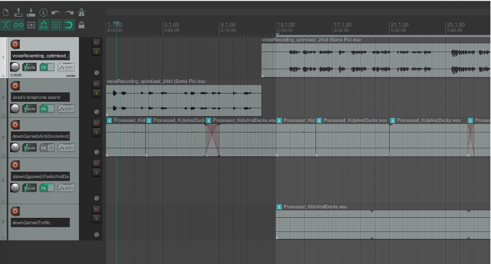
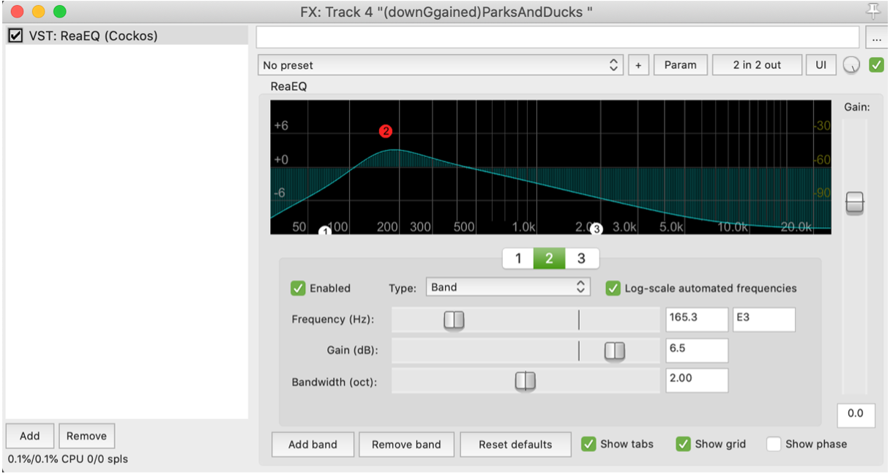

An audio narrative exploring an international student's journey in Ireland
While negative thoughts made their way into our minds, the city and
the people always reminded us
how happiness is always just a walk away.
Audio Context
A student who has recently moved to Dublin to pursue a masters degree in the middle of a pandemic feels homesick and talks to his mother over the phone while walking around the city. The recording starts with José feeling lost and rethinking his decisions, he gets out of his room to clear his mind.
As he continues walking, he is encountered by happy children, people feeding the ducks in St Stephen’s Green, seagulls stealing a snack, a street performer and the countless things he loves about Dublin. He realises how easy it is to forget the blessings when he is trapped in his own mind, isolated from the world.
My Input
Voiceover recoding
It is recommended to use a more live room for voice recording, as the sound can be easily muffled in a dead room. The perfect balance is a room that is absorptive enough to prevent any significant reflections and resonances, and reverb could be added later on if needed. So, I recorded my voice in the bedroom.
One problem that I had with the voice recording is plosives. I find Spanish easier to record as it does not have that many soft consonants as English does. It took me quite a few times to find the appropriate distance, but the plosives seemed always present. I used Audacity to clean up the recording. Similar to last time, I applied EQ, Compressor and Normalise after reducing the noise.
But I have explored another way of getting rid of the plosives. At the start and end of a sentence, applying a fade in or fade out effect to that specific sound frequencies can help soften the harsh sound to the ear. It contributes to the sound as well in that it creates a sense of wrapping up at the end. But sometimes I find myself overdo it, making the voice have a sudden and abrupt fade, so it should be used in moderation.
My Input
Edit the ambient sound
The challenge of incorporating realistic ambience is to make it a hidden and present sound. If the realistic sound is only mixed at the point of the voice indications, the whole piece sounds discontinuous and disturbs the immersive experience of the listener.
To solve this problem, I have selected multiple tracks and edit them at different layers of ambiences. When there is no specific indication of what sound (such as ducks quacking, water rippling, etc.) should be in the background (see figure2). A soft ambience that contains mild air tones or people talking is mixed with the main voice. It has been turned down in gains to around -12db so it is not distracting.

track control

EQ can be useful when certain ambiance needs emphasis
My Input
Storyboard document


Storyboarding
Xilong Zhang - Content creator/ Voice actor/ Audio editor
Stephen O'Toole - Ambient sound creator/ Audio Editor
Pragya Vashishth - Ambient sound recorder/ Audio Editor
Recorded with Zoom H5, edited with Audacity/ Reaper/ Ableton
Also in Video & Audio:

Interviews with people talking about discoveries during Covid confinement

A Promotional Video for MacBook Air